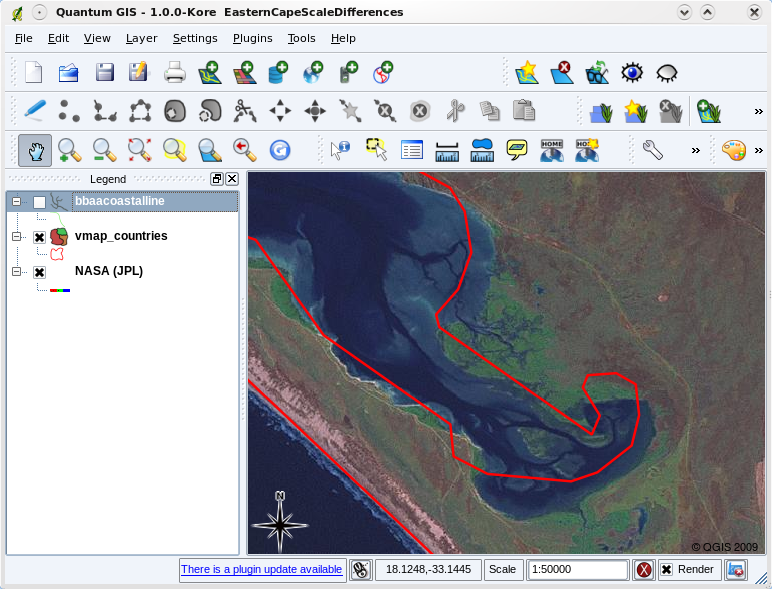

Research Methods for Global Studies
Class 12: Qualitative Analysis in Action
Conversation Analysis
- Fine-grained analysis of talk
- Concerned with production of social order via interaction
- Rooted in ethnomethodology (the study of the methods people use for understanding and producing social order)
Assumptions of conversation analysis
- Talk is structured
- Talk is forged contextually
- Analysis should be grounded in data
Transcription
| symbol | meaning |
|---|---|
| .hh | Breathing in |
| hh | Breathing out |
| : | Prolongation |
| (0.8) | Pause for 8/10 of a second |
| _ | Emphasis |
| (.) | Slight pause |
Conversation Analysis in Sidewalk

Conversation Analysis in Sidewalk

Grounded Theory
- formal approach for iterative development of theory from data
- data collection and analysis proceed in tandem
- lots of different ideas about how it should be done; lots of misuse of the term
Grounded Theory Concepts
- Theoretical sampling: sampling occurs in tandem with theory formation
- Coding: data broken down into component parts and given names; codes emerge from data
- Theoretical saturation: coding and data collection proceed until no further returns
- Constant comparison: maintaining close connection between data and theory as it is formed
Grounded Theory

Kolopack et al. (2015)
Geo-spatial Methods
Geographic Information Systems (GIS)
Using GIS for Research
Understanding GIS
- Data
- Hardware
- Software
- People
Data
- Vector
- Raster
- Associated Attributes
Vector Data

Vector Data

Vector Data
Vector Data
- points
- polylines
- polygons
Vector Data: Scale

Vector Data: Scale
Vector Data
Eurostat Country ShapefilesRaster Data

Raster Data

Layers